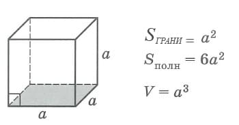

Составить блок-схемы алгоритмов решения задач,
предложенных в задании.
На основе полученного графического описания
разработать программы на языке С++. Примечание: для некоторых заданий уже даны либо алгоритмы, либо программы на
языке С++.
Используя среду программирования Visual Studio 2008 (
Visual Studio 6.0) выполнить программы, произвести их отладку.
Задача 1. Найти значение выражения
Введите значение вещ x:
Вывод y: ...
Задача 2. Найти площадь и периметр прямоугольного
треугольника
Введите значение цел или вещ a:
Введите значение цел или вещ b:
Вывод S: ...
Задача 3. Найти значение выражения
Формула:
Введите значение цел или вещ m:
Вывод y: ...
Задача 4. Найти значение выражения
Введите значение цел или вещ x:
Вывод y: ...
Задача 5. Cоздать меню для вычисления площадей фигур:
прямоугольник, круг, треугольник (С клавиатуры вводится номер фигуры, в зависимости от
которого вычисляется площадь)
Площадь прямоугольника
Введите значение цел или вещ a:
Введите значение цел или вещ b:
Вывод S: ...
Площадь круга
Введите значение цел или вещ R:
Вывод S: ...
Площадь треугольника
Введите значение цел или вещ a:
Введите значение цел или вещ b:
Вывод S: ...
Задача 6. Дана длина ребра куба. Найти площадь грани,
площадь полной
поверхности и объем куба.

Введите значение цел или вещ a:
Площадь грани
Вывод S: ...
Площадь полной поверхности
Вывод S: ...
Объем куба
Вывод S: ...
Задача 7. Вычислить расстояние между двумя точками с
данными
координатами
(x1, y1) и (x2, y2).
Введите значение цел или вещ x1:
Введите значение цел или вещ x2:
Введите значение цел или вещ y1:
Введите значение цел или вещ y2:
Вывод L: ...
Задача 8. Алгоритм перевода температуры из градусов С
в значение
температуры по шкале Кельвина и Фаренгейта.
Введите значение цел или вещ t (°C):
Из градусов Цельсия в значение температуры по шкале Кельвина
Вывод K: ...
Из градусов Цельсия в значение температуры по шкале Фаренгейта
Вывод F: ...
Задача 9. Найти корни квадратного уравнения и вывести
их на экран, если
они есть. Если корней нет, то вывести сообщение об этом. Конкретное квадратное уравнение определяется
коэффициентами a, b, c, которые вводит пользователь.
Введите значение цел или вещ a:
Введите значение цел или вещ b:
Введите значение цел или вещ c:
Вывод D: ...
Задача 10. Определить, принадлежит ли точка с
заданными координатами
заштрихованной области.
Введите значение цел или вещ x:
Введите значение цел или вещ y:
Вывод y: ...
Задача 11. Вычислить значение функции y = f(x).
y
= 2x - n, если x
> n
y = 0, если x = n
y = n/(3x - 1), если x < n
Введите значение цел или вещ x:
Введите значение цел или вещ n:
Вывод y: ...
Задача 12. Определить сущестование треугольника и его
тип. По длинам
трех отрезков, введенных пользователем, определить возможоность сущестования треугольника, составленного из
этих отрезков. Если такой треугольник существует, то определить, является ли он равносторонним.
Введите значение цел или вещ a:
Введите значение цел или вещ b:
Введите значение цел или вещ b:
Вывод S: ...
Вопросы по теме 1.1 : Основные понятия алгоритмизации.